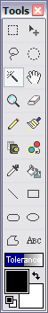

Magic Wand
|
 To make a new selection, simply click on the image in the region you would like to select. To adjust a selection, use any combination of the Control and Shift keys. Control can be used to invert an area of a selection, Shift will result in the region being extended to include the new region, and Control with Shift to subtract from a selection The picture to the right shows a region that was selected using the Lasso Selection Tool and Magic Wand. To make this selection, a rough selection was made around the two fish that are selected, then the blue background was clicked while holding Control and Shift. Note: the selection outline (also known as "marching ants") will disappear when a selection is being moved. Important: Once a selection region (or regions) are created, you may only alter that region. This includes any and all alterations. For instance, if selection regions are made, the Pencil Tool will only work in those regions until those regions are unselected. To deselect a region, ensure the Lasso Tool (or any selection tool) tool is activated, click on a region without dragging, and the the selection region will be cancelled. You may also click Edit --> Deselect to deselect everything. Then you may continue working on the entire canvas as a whole. |